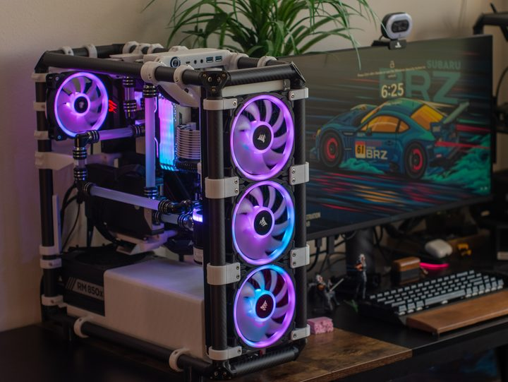
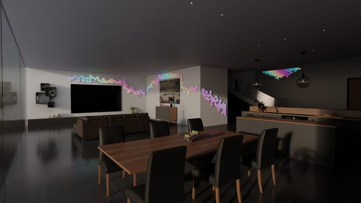
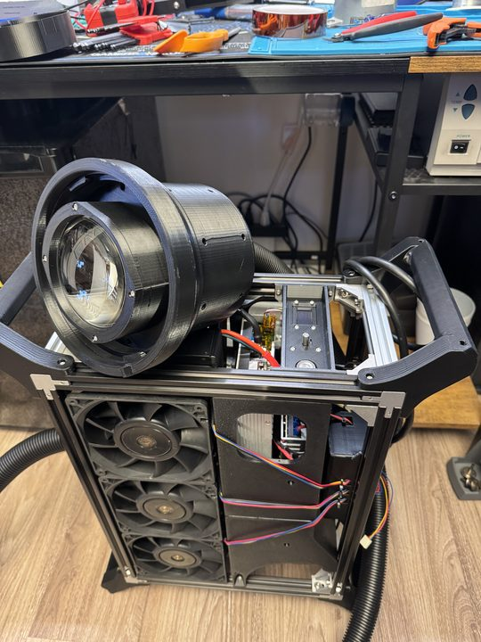
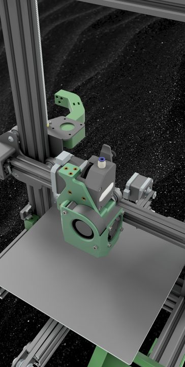
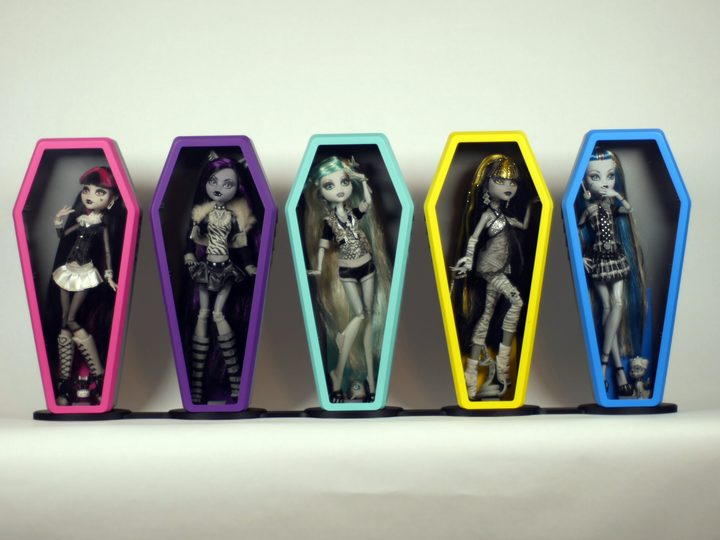

Mechanical design · Electronics · Software · V-Labs
I design things in CAD, then build the boards, firmware and tools that make them work.
Hands-on engineer in Madison, WI. 10+ years in Autodesk Inventor, CSWA and CSWP certified, with a long run of custom 3D printers, PCs, electric vehicles and lighting. My recent work spans KiCad, embedded firmware and C++.
- Autodesk Inventor
- SOLIDWORKS (CSWP)
- KiCad
- Blender
- FDM / SLS / sheet metal
- RepRapFirmware
- ESP32 / SAMD51
- C++ / Unreal
- Python

Selected work

2026 · in progress
Modular Smart Light Panels
Edge-lit hexagon, square and triangle panels that snap together in any layout, work out their own arrangement, and play effects mapped to the room rather than along a strip.
- KiCad
- PCB design
- CAN bus
- ESP32

2025 – 2026 · in progress
1000 W LED Gobo Projector
A liquid-cooled 1000 W LED projector for gobo (patterned-light) projection, with my own controller board, firmware, optics housing and frame.
- KiCad (4-layer)
- SAMD51 / CAN
- PMBus
- Liquid cooling

2017 – 2025
Carbon 3D Modular PC Chassis
A parametric PC chassis system of carbon fiber tubes and clamp-on 3D-printed modules. It began as an AMD-sponsored build featured on AMD's social channels and has produced five generations of builds, including a commission.
- Autodesk Inventor
- Parametric design
- Carbon fiber
- FDM
2026
Satisfactory Mods
Thirteen C++ mods for the factory game Satisfactory, with about 19,500 downloads in two months, including signal-free train traffic control, demand-driven dispatch and a server networking fix.
- C++
- Unreal Engine
- Multiplayer networking
- Algorithms

2016 – 2021
Electric Longboards
Three generations of DIY electric longboards: printed-mount prototypes, a 34 mph personal board with a pack I spot-welded myself, and a commissioned 12S4P build.
- VESC
- Spot-welded Li-ion packs
- BMS
- BLDC drive

2023 – 2026
V-Labs Ender 3 & RRFarm
A conversion kit that makes the world's most common budget 3D printer far more reliable and about 3× faster, plus a web app for running my six-printer farm.
- Autodesk Inventor
- RepRapFirmware
- Python
- FastAPI

2023 – 2024
FDM Part Extraction System (Micronics)
At Micronics, an automated system that clears finished parts from an enclosed FDM printer's bed so prints can run back-to-back without an operator.
- Automation
- Linear motion
- Stepper control
- Rapid prototyping

2020 – 2021
UWRF Lunabotics Rover
A NASA moon-mining rover that my roommate and I started at UW–River Falls. I did the mechanical design: closed-loop hub-motor wheels, a deployable wheelbase and a bucket-chain excavator.
- Autodesk Inventor
- BLDC / ODrive
- Gearbox design
- Mechanisms

2017 – 2019
BEAST Robotics: Suction End Effector
Mechanical lead for the end-effector team on FIRST team 2202. I designed a suction-cup effector that captured both game pieces with one system, and won an engineering ingenuity award.
- FIRST Robotics
- Autodesk Inventor
- Molding
- PETG

2014 – 2019
Custom 3D Printers: HyperCube Evolution & RailCore
The printers behind everything else, from a PrintrBot at 14 to a HyperCube Evolution with my own balanced direct-drive printhead and a RailCore I built.
- CoreXY
- RepRapFirmware
- Duet
- Printhead design

2025 – 2026
3D-Printed Products for Etsy
Coffin-shaped doll display cases, stands and organizers that I designed, batch-printed on my own farm, photographed in a home studio and sold through the MinnowsMinisAndMore Etsy shop (141 sales, 5.0★).
- Product design
- Batch production
- Print farm
- Product photography

2019 – 2026
Small Designs, Woodworking & Published Models
Everyday engineering: a magnetic-hinge laptop stand, a guided knife sharpener, a replacement headset clasp users rate 5 stars, camper keder-rail accessories, a fireplace surround, a SkillsUSA car and more.
- Product design
- FDM
- Woodworking
- Printables

2012 – 2017
Early Work: Maker Faire, Clearwater, Rockets
Where it started: woodshop as a kid, a Vrakas Labs booth and 3D-modeling seminars at Maker Faire Milwaukee, a transparent water-cooled PC that Nvidia called "great work", high-power rockets and a DIY e-bike.
- Maker Faire
- Teaching
- Laser cutting
- Water cooling
Timeline
- 2026 · in progressModular Smart Light PanelsEdge-lit hexagon, square and triangle panels that snap together in any layout, work out their own arrangement, and play effects mapped to the room rather than along a strip.
- 2026Satisfactory ModsThirteen C++ mods for the factory game Satisfactory, with about 19,500 downloads in two months, including signal-free train traffic control, demand-driven dispatch and a server networking fix.
- 2025 – 2026 · in progress1000 W LED Gobo ProjectorA liquid-cooled 1000 W LED projector for gobo (patterned-light) projection, with my own controller board, firmware, optics housing and frame.
- 2025 – 20263D-Printed Products for EtsyCoffin-shaped doll display cases, stands and organizers that I designed, batch-printed on my own farm, photographed in a home studio and sold through the MinnowsMinisAndMore Etsy shop (141 sales, 5.0★).
- 2023 – 2026V-Labs Ender 3 & RRFarmA conversion kit that makes the world's most common budget 3D printer far more reliable and about 3× faster, plus a web app for running my six-printer farm.
- 2019 – 2026Small Designs, Woodworking & Published ModelsEveryday engineering: a magnetic-hinge laptop stand, a guided knife sharpener, a replacement headset clasp users rate 5 stars, camper keder-rail accessories, a fireplace surround, a SkillsUSA car and more.
- 2017 – 2025Carbon 3D Modular PC ChassisA parametric PC chassis system of carbon fiber tubes and clamp-on 3D-printed modules. It began as an AMD-sponsored build featured on AMD's social channels and has produced five generations of builds, including a commission.
- 2023 – 2024FDM Part Extraction System (Micronics)At Micronics, an automated system that clears finished parts from an enclosed FDM printer's bed so prints can run back-to-back without an operator.
- 2020 – 2021UWRF Lunabotics RoverA NASA moon-mining rover that my roommate and I started at UW–River Falls. I did the mechanical design: closed-loop hub-motor wheels, a deployable wheelbase and a bucket-chain excavator.
- 2016 – 2021Electric LongboardsThree generations of DIY electric longboards: printed-mount prototypes, a 34 mph personal board with a pack I spot-welded myself, and a commissioned 12S4P build.
- 2017 – 2019BEAST Robotics: Suction End EffectorMechanical lead for the end-effector team on FIRST team 2202. I designed a suction-cup effector that captured both game pieces with one system, and won an engineering ingenuity award.
- 2014 – 2019Custom 3D Printers: HyperCube Evolution & RailCoreThe printers behind everything else, from a PrintrBot at 14 to a HyperCube Evolution with my own balanced direct-drive printhead and a RailCore I built.
- 2012 – 2017Early Work: Maker Faire, Clearwater, RocketsWhere it started: woodshop as a kid, a Vrakas Labs booth and 3D-modeling seminars at Maker Faire Milwaukee, a transparent water-cooled PC that Nvidia called "great work", high-power rockets and a DIY e-bike.
Experience
Independent projects & V-Labs · Madison, WI
Jun 2024 – present
Studying mechanical design while building larger independent projects: a 1000 W LED gobo projector with a custom controller board and firmware, modular smart light panels, and a run of Satisfactory mods with about 19,500 downloads. I also designed and printed products for the MinnowsMinisAndMore Etsy shop (141 sales, 5.0★) on a six-printer RepRapFirmware farm.
Micronics LLC · Middleton, WI
Independent contractor · Jul 2023 – Jun 2024
One of three people at a hardware startup that was later acquired by Formlabs. I designed and built product prototypes from sheet metal, FDM and SLS parts and off-the-shelf components, sourced and tested hardware from global suppliers, and worked on systems automation and PLCs, G-code scripting, FEA and modal analysis, all on a rapid design-test cycle. One project I can show is an automated part-extraction system for FDM printers.
Space Science Institute · Student intern
2017 – 2019
Designed and built imaging targets and camera mounts used to test and calibrate software for the Mastcam-Z instrument on NASA's Mars 2020 rover.
Freelance CAD & custom builds
2011 – 2019
Through Fiverr and local clients: designed injection-molded components for real products, modeled replacement parts and delivered 3D printing and prototyping work. Designed and built custom computers and enclosures, including AMD-sponsored and commissioned builds.
Education & certifications
- Madison Area Technical College, Mechanical Design (in progress, expected 2027–28)
- University of Wisconsin–River Falls, two years of a dual-degree program (B.S. Applied Physics + B.S. Mechanical Engineering): statics, dynamics, calculus, mechanics of materials
- CSWA and CSWP (Certified SOLIDWORKS Associate / Professional), both passed with perfect scores
- Brookfield East High School, 2020: 12 AP credits; ACT 32 (math 35); PLTW, Science Olympiad, SkillsUSA
About
I enjoy finding out how the universe works, and using that knowledge to create things within it.
It started with Lego, building whatever I imagined instead of following the instructions, and grew into my parents' garage and the aisles of the hardware store. Summers were for projects with my older brother: he handled the electronics and I handled the mechanics.
At 14 I got a PrintrBot Simple. I'd been using Autodesk Inventor since sixth grade, so suddenly my models could become real parts. The printer needed so much fixing that I spent as much time designing upgrades for it as using it, which led me into the RepRap community. I've built a long line of printers since, including a HyperCube Evolution, a RailCore and a farm of reworked Ender 3s.
I showed 3D modeling at a booth and gave seminars at Maker Faire Milwaukee (2012–2016) under the name Vrakas Labs (V-Labs), and I still publish under that name. I was mechanical lead on FIRST Robotics team 2202, where I won an engineering ingenuity award, and co-captained a regional-champion Rockets for Schools team.
I use AI tools, mainly Claude, as part of my engineering workflow: for drafting specs and decision records, scripting KiCad and Blender, and writing firmware and mod code that I review and test on real hardware.
Contact & elsewhere
- Email: benvrakas@gmail.com
- Location: Madison, Wisconsin
- GitHub: github.com/benvrakas: hardware repos and Satisfactory mods
- Printables: V-Labs: published 3D-printable designs
- Thingiverse: benvrakas: older designs, 2014–2022
- ficsit.app: benvrakas: Satisfactory mods
- YouTube: Ben Vrakas and V-Labs: build videos and CAD timelapses